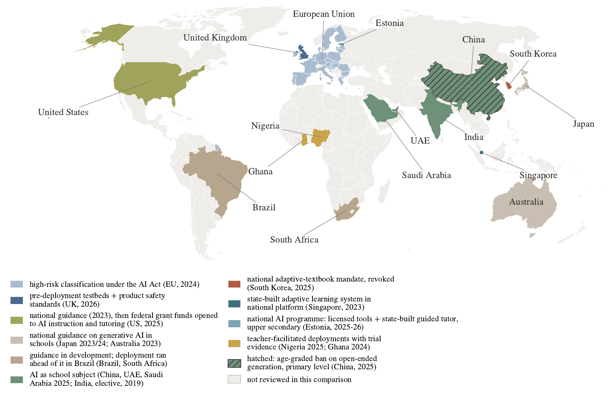

Adaptive learning and AI in education
More right answers during the session is not the same as more learning.
OneThe phenomenon
Give a class of high-school students a generative AI helper for their maths practice. They get more answers right during the session and, with the helper removed, do worse on the exam than the class that never had it [1]. Give a university physics class a carefully designed AI tutor and they learn more, in less time, than the same class in a well-run active-learning session [2]. Meta-analyses of the older intelligent tutoring systems report effects that approach human tutoring [3, 4], the target Bloom set forty years ago [5]. All of these are called AI in education. The problem is that the category is doing no work: it groups systems that share an interface and almost nothing of pedagogical substance, and the evidence contradicts itself because the category does.
TwoThe stakes
Governments are moving faster than the evidence. National guidance, grant funding, product-safety testbeds and, in one case, an age-graded ban have arrived within two years of each other, and a procurement decision in a school today is made with no shared way of saying what kind of system is being bought. A distinction the learning sciences settled decades ago, between performance during practice and learning that survives a delay [6], is exactly the distinction the session record cannot see. And the assistance dilemma, how much help is too much, was mapped in the cognitive tutors long before a model could write the answer for you [7].

ThreeThe evidence so far
The learner model has a long history, from knowledge tracing [9] to the cognitive tutors whose effects were measured across many classrooms, and the meta-analytic record on those systems is positive and reasonably stable [3, 4]. The randomiseda evidence on generative systems is young and split [1, 2]. What the two halves of the literature share is that neither codes the systems it evaluates by what they know about the learner or by who decides when help is withdrawn.
FourWhat we built
Day to day I lead data and AI at Explore Learning, where we build personalisation for a tutoring platform used by thousands of learners, and I co-founded Siraj, a guidance platform for secondary-school students in Palestine. The framework paper [8] came out of trying to reconcile what the literature says with what I see in deployment. It classifies systems along four axes. The first is epistemic warrant, the depth of the learner model, in five cumulative levels from a within-session trace to a calibrated estimate of supported and independent capability. The second is the adaptation mechanism, coded separately for content production, learner-state estimation and pedagogical decision policy. The third is the locus of agency for each function, with the withdrawal of assistance weighted most. The fourth is the grade and direction of evidence, recorded apart and never merged. Read that way, the landmark evidence is consistent with a danger configuration, generative adaptation on a shallow learner model with no evidence of durable benefit, and with a slide of deployed systems towards it. Five falsifiable hypotheses and five procurement propositions follow.
FiveQuestions a project could answer
- The companion coding study: Apply the codebook to the evidence corpus with independent raters, report agreement, and test the danger-configuration hypothesis against the outcomes. MSc or PhD
- Durable outcome against session performance in a live platform. This is the record theme in a classroom: the record a tutor sees is not the record that predicts what a child retains, and the two can be measured side by side. PhD
- Calibrated estimates of supported and independent capability, the deepest level of the learner model. What does it cost in items and time to obtain one, and how quickly does it go stale? PhD
- Drift in learner populations and in content, which brings the drift theme into the classroom: does a mastery threshold fitted last year still mean mastery this year? MSc
Notes
a A randomised controlled trial assigns learners to receive the tool or not by chance, so the comparison is not confounded by who chose to use it. ↩
References
- Bastani, H., Bastani, O., Sungu, A., Ge, H., Kabakcı, Ö. and Mariman, R. (2025). Generative AI without guardrails can harm learning: evidence from high school mathematics. PNAS, 122(26), e2422633122. doi:10.1073/pnas.2422633122
- Kestin, G., Miller, K., Klales, A., Milbourne, T. and Ponti, G. (2025). AI tutoring outperforms in-class active learning: an RCT introducing a novel research-based design in an authentic educational setting. Scientific Reports, 15, 17458. doi:10.1038/s41598-025-97652-6
- Kulik, J. A. and Fletcher, J. D. (2016). Effectiveness of intelligent tutoring systems: a meta-analytic review. Review of Educational Research, 86(1), 42-78. doi:10.3102/0034654315581420
- VanLehn, K. (2011). The relative effectiveness of human tutoring, intelligent tutoring systems, and other tutoring systems. Educational Psychologist, 46(4), 197-221. doi:10.1080/00461520.2011.611369
- Bloom, B. S. (1984). The 2 sigma problem: the search for methods of group instruction as effective as one-to-one tutoring. Educational Researcher, 13(6), 4-16. doi:10.3102/0013189X013006004
- Soderstrom, N. C. and Bjork, R. A. (2015). Learning versus performance: an integrative review. Perspectives on Psychological Science, 10(2), 176-199. doi:10.1177/1745691615569000
- Koedinger, K. R. and Aleven, V. (2007). Exploring the assistance dilemma in experiments with cognitive tutors. Educational Psychology Review, 19(3), 239-264. doi:10.1007/s10648-007-9049-0
- Ihshaish, H. (2026). The empty learner model: classifying artificial intelligence in education by epistemic warrant. Manuscript; a companion multi-coder evidence study is in preparation. Not yet peer reviewed. Preprint on request.
- Corbett, A. T. and Anderson, J. R. (1995). Knowledge tracing: modeling the acquisition of procedural knowledge. User Modeling and User-Adapted Interaction, 4(4), 253-278. doi:10.1007/BF01099821